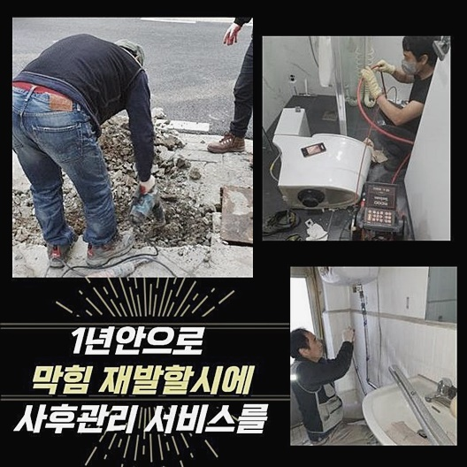
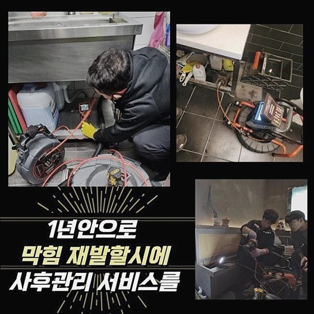
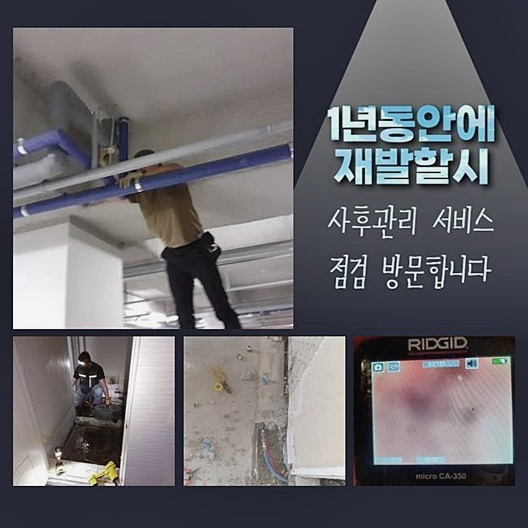
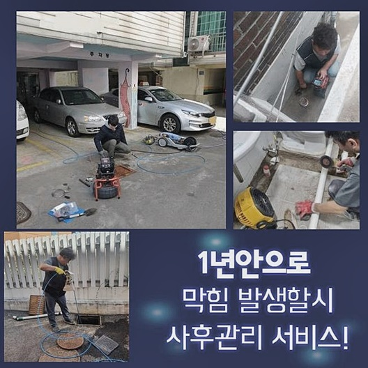
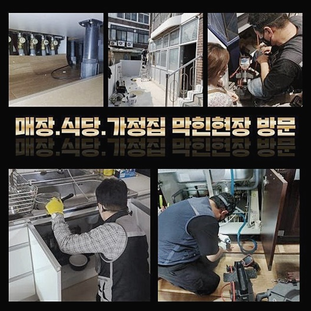
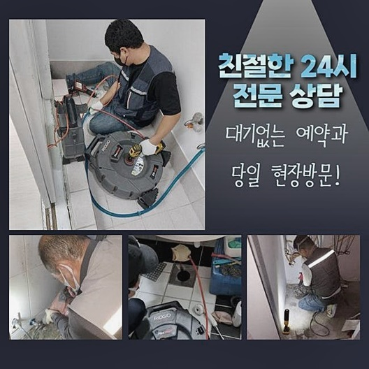
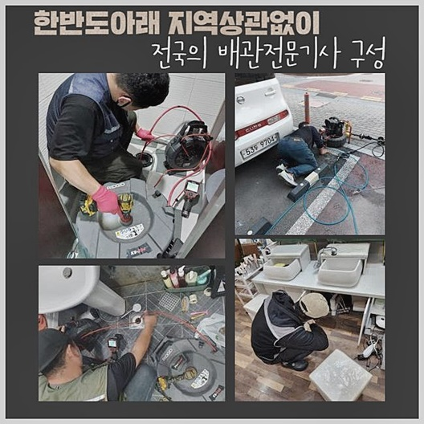

🏠 금천구 독산동변기막힘 시흥동 악취차단 부속수리
용인시 처인구 배관막힘 전문 시공 후기

📋 작업 개요
- 위치: 용인시 처인구, 수원시 영통구, 화성시 동탄
- 서비스 유형: 배관막힘, 고압세척, 내시경점검
- 작업 일시:
- 업체명: 하수구수사대 (010-5615-2118)
🔍 문제 상황
금천구 독산동변기막힘 시흥동 악취차단 부속수리
하수구막힘때문에 출동드린 의뢰자의 식당현장은 물이빠지는게 조금씩 느려졌다고 의뢰를주셨는데 이런상황이라면 신속하게 대처해야한다는 신호탄이에요
자가조치를 시도해보았지만 잠시동안만 해결되고 불편함을 느끼면 전문가를통해 하수구작업을받아보시는게 좋겠습니다
해결을원한다면 저희업체를 통하여 문의주신다면 신속한 출동뿐만아니라 해결까지 가능하답니다
영업시설에서 하수구가막혔을시 확실하게 처리하고 쾌적하게 하수구환경을 유지하도록 도와드릴테니 걱정마세요
고객님께서 설명해주신 내용으로 전체적으로 판단하여 가장먼저 찌꺼기들을 석션도구로 흡입시킨후 배수관을열어 내부상태를 확인하고자했죠
하수구내부를 살피기위해 주름관을해체한뒤 살펴보았죠
안속깊은곳에 퇴적된 슬러지들과 오염물질들을 철저하게 제거했고 정화까지도 진행해주었어요
역류증세의 이유였던 막힘문제를 처리하고 정상적으로 배수상태가 가능하게끔 조치까지 취해드렸어요
깨끗히 하수구를 이용하실수있게끔 유지보수에 대한 부분과 관리방법도 일러드렸죠
조속한대처로 문제를처리하여 고객분의 쾌적함들을 높일수있었죠
두번째현장의 경우 아파트시설 현장이었는데 전문장비들을 구비하여 문제의현장을 방문했어요

🔎 원인 분석
💡 전문가 진단: 정밀 진단 장비를 사용하여 슬러지의 고착 여부를 판명하고 타격/세척 작업을 실시했습니다.
배수상태가 계속해서 느려지고있고 혼자서직접 해결하려고 대처해봤지만 확실하게 뚫리지않았다고 답답하다고 저희에게 전달해주셨어요
배수가 막히는현상은 전문가의도움이 필요한까닭에 저희업체가 맡게되어 다행이에요
저희방문으로 불편한점이 해소되었으면 좋겠습니다
같은문제로 막히는현상이 재발되었을때 아무때나 전화를주시면 신속한대처로 보여드리겠습니다
물이원활히 배수되지못하고 물이넘치는 상황까지 이어져서 악취문제도 연결된 상태였으며 이것들로인해 고객분에게 곤란함들을 야기시켰죠
설거지할때나 음식을조리할때 물이흐르지못하고 역류현상도 보이고있다면 환경상에도 해로울수가 있답니다
그렇다보니 조속한처리가 필요했는데요
여러현장을 오랫동안 방문하여 경력이풍부한 전문가들이 방문드린뒤 막힌이유를 발견했어요
발현된원인을 살펴봤더니 배관속슬러지 잔해물들로인해 막힘이 일어난것으로 파악할수있었네요
여러차례 일러드렸지만 이런현상은 빠른조치로 해결해야하는데 하수관막힘으로 악취문제까지 연결된다면 일상에 막대한지장을 초래할수있어요
저희업체는 여러분들의 깔끔한환경을 만들어드리고자 조속한대처를 취해드릴것을 약속해요!
필요한조치로 하수구막힘에 대해서 확실하게 처리해드리도록 해볼게요
정상적인 배수시스템을 만들기위해 노력하고있고 혹여나 실패할경우 수리금액을 받지않습니다

🔧 작업 과정
하수구막힘에 대하여 방지법까지 알려드리고있죠
의뢰자께서 깨끗한 배관상태로 영위하실수있도록 최선다해 작업할게요!
저희업체에서는 배수관마다 특성과 생김새들을 파악한뒤 해결법을찾는 과정을통하여 수행하고있습니다
내시경기계를 이용하여 하수도안쪽을 살핀뒤 구조적인부분과 오염정도까지 파악합니다
카메라기기는 이물이 쌓인상태를 명확하게 보여주고 이를바탕삼아 고객분에게 현재상황이 어떠한지 설명하고있어요
이런과정으로 효율성이있고 정밀한 써비스를 제공하고있죠
주기로 하수구점검을 진행하는게 좋습니다
배관안속은 기름슬러지나 석회물질이 퇴적되므로 제거해주어야해요
다시한번 일러드리는것으로 카메라기기를 사용한다면 두눈으로 볼수없는 하수도내부까지 진찰할수있어요
이뿐아니라 이물의 형태까지 확인할수가있죠
오염물을 제거하려면 스케일링도구들이 필요하답니다
세척을진행할때 기름이물은 분쇄하기가 까다롭기에 약품이나 물을이용해 누그러뜨린후 흡입기로 빨아올리는것이 효율적입니다
이물이누적되서 단단한상태로 굳어버렸다면 샤프트기계를 이용해 해결가능해요
오늘장소는 채소껍질과 기름이물 덩어리들이 하수관을 막히게한 상태였어요
이러한 상황이다보니 석션만으로는 대처하기 어려운상태였고 샤프트기계로 분쇄과정을 거친뒤 고압세척기를 통하여 하수도를 정리하기로 결정했죠
이것으로 배수가 막혔던현상이 깔끔히 해결될걸로 기대할수있었죠
분해를시작하니 쌓여있었던 이물과 찌꺼기들이 분쇄되었습니다
꽉막혀있는 지점에서는 파쇄강도에있어 조절하며 신중한 작업이 요구되었는데 이로인해 배관파손을 발현시키지않은채 분쇄할수있었네요
분해작업이 끝나고나니 이물이조각나서 제거과정을 착수하기에 용이한상황이 만들어졌고 이후에는 고압청소기로 제거하기로했죠
수압력이쎈 물줄기로쏴서 하수구내의 찌꺼기들을 소거할수있었는데 이과정도 매한가지로 하수관손상을 입히지않게끔 조심스레 임해야했어요


✅ 작업 완료
모든계획을 깔끔히끝낸후 기계들을챙겨 철수했습니다
하수구가 막히는것을 방치시키지말고 문제발견시 점검해보시는걸 권유드려요
만약 방치한다면 2차피해로 불거질수있어 신속처리가 필요한것이죠
지역관계없이 60분안으로 도착이가능하며 투명히 작업계획을 공개하고있으니 우려하지않으셔도 된답니다
저희를찾아주시면 믿음에 보답할수있도록 성공적인결실로 나타내드릴게요!
문제와관련하여 궁금증이 풀리지않으셨다면 시간상관없이 연락을통해 질문하신다면 친절히 응대도울게요




⚠️ 하수구 배관 막힘 예방 및 관리 가이드
- ✅ 머리카락, 비닐, 물티슈 등 물에 분해되지 않는 이물질은 절대 흘려보내지 마세요.
- ✅ 기름기 많은 식기는 설거지 전 키친타올로 먼저 기름때를 닦아내세요.
- ✅ 주기적으로 배수구에 뜨거운 물을 가득 부어주어 유지방 고착을 방지하세요.
- ✅ 작업 후 1년 이내 재발 시 무상 A/S 보증 서비스를 제공합니다.
💡 핵심 정리
- 확실한 장비 작업(내시경 점검 및 샤프트 스케일링)으로 원인을 뿌리 뽑습니다.
- 작업 후 1년 이내에 동일한 부위 재발 시 100% 무상 A/S 서비스를 보장합니다.
- 서울 · 경기 · 인천 전 지역에 24시간 언제든 긴급 출동할 수 있도록 항시 대기 중입니다.
❓ 자주 묻는 질문 (FAQ)
🚨 용인시 처인구 배관막힘 문제로 고민이신가요?
정확한 원인 진단과 확실한 시공으로 재발 없는 해결을 약속드립니다.
24시간 긴급 출동 | 서울 · 경기 · 인천 전지역 | 1년 내 재발 시 무상 A/S